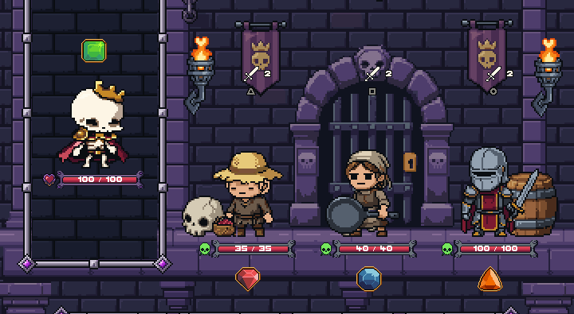
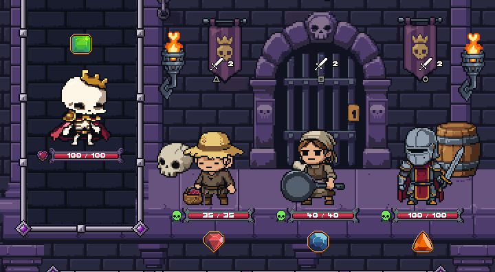
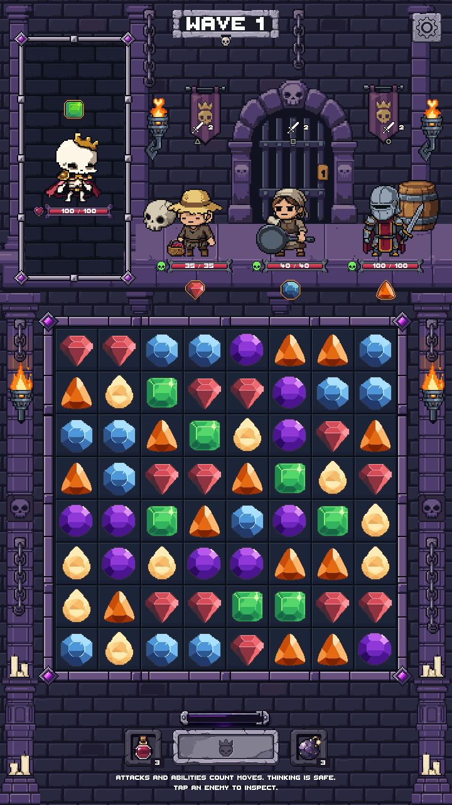
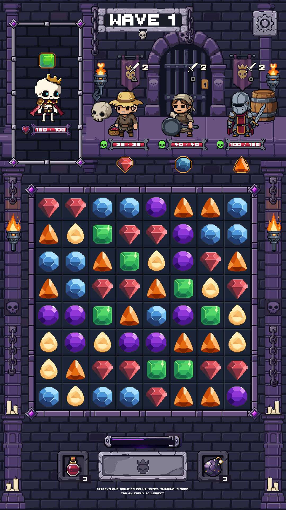
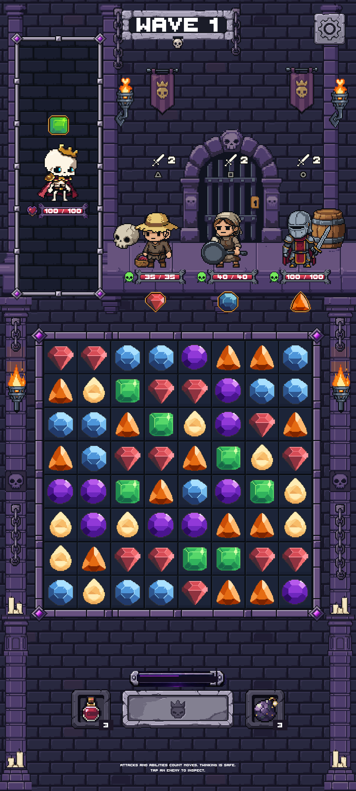
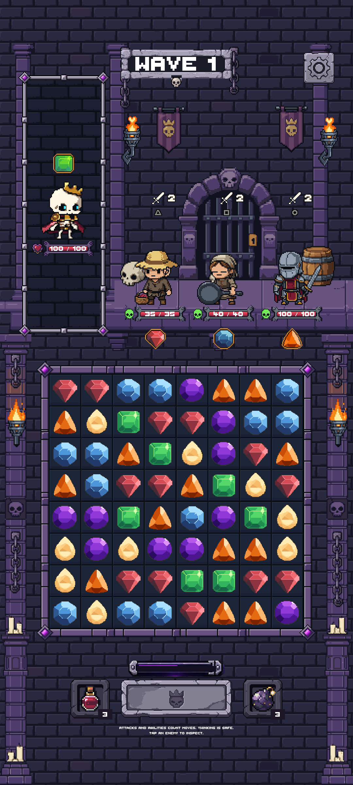
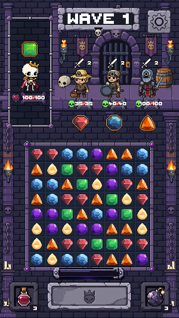
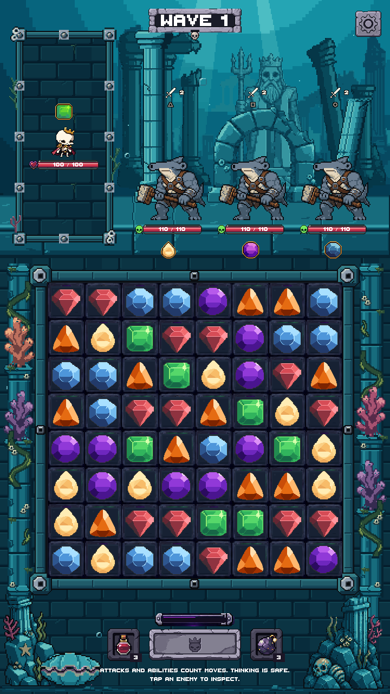

The rejected extra rows are removed. One deeper standing surface replaces the old enemy-side strip. The gate and props meet its rear edge. Enemy feet, separator, portrait, board and controls stay fixed. Pending your visual approval; not merged.


128×32, five opaque colors, exact LibreSprite roundtrip. Horizontal repeat only. 10 PixelLab generations.

4× nearest-neighbor view
All five layouts passed exact protected-pixel and geometry checks, board swap, Settings, and native-art checks. Unity compilation passed. No real-device test.





